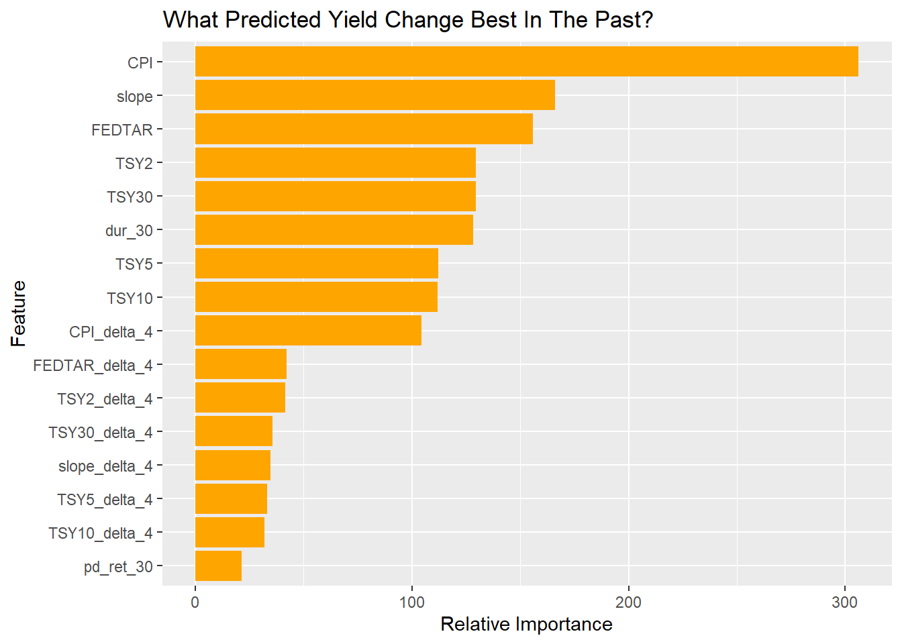

Part Three
A Trading Rule (Maybe)
Wishful Thinking
It has become fashionable in the last decade to put a lot of faith in crowd-sourced forecasting. Of course, asset market prices do exactly that and have done so for centuries, millennia, even. Are those forecasts any good? In the main, no. I always enjoy charts that show the evolution of market-implied forecasts because they show the perils of predicting the future. Predicting the evolution of the Federal Funds rate is a current example. Markets continue to undershoot the pace and level of the rising Funds rate. Just a month ago the forecast terminal Funds rate was 100 BP below where it stands today. In the chart below we see the current implied path of the Fed Funds rate today and one month ago. The market thinks the Funds rate will peak at 4.5% next March and decline from there.
This seems overly optimistic to me. As a rule of thumb, two percent real rates in an environment of long-run inflation of, also, two percent is pretty reasonable. In other words, a four percent nominal cost of money. Alas, a gradual approach, leveling off at this new equilibrium, is unrealistic when inflation is running at nine percent. You’ve heard me talk about anchoring and hindsight bias before and it is vividly illustrated by market expectations now. We might get to a four percent funds rate but it will be on the way down from something higher than 4.5%. I don’t know the exact level but it will have to get higher than long-term bond yields, as you’ve heard me say before.
The economy is showing some signs of slowing. Interest sensitive sectors like housing and muni bond issuance have slowed dramatically. The consumer is still going strong however - not a good omen for inflation. We saw in the 1970s how difficult it was for the Federal Reserve to get ahead of inflation in the face of an exogenous shock. Then it was oil. Today we face, arguably, twin exogenous shocks of energy and food prices. Judging by Powell’s comments, the Fed knows the situation we’re in and is prepared to do “whatever it takes1”, even if they were late off the start. All this doesn’t imply a peak Funds rate of 4.5%, I am sad to report.
My friend Krishna Memani is fond of saying “What the world really wants is a high quality, high yielding bond.” We are about to get some.
Toward a Plan of Action
Last time I said I’m waiting for an entry point to buy bonds or “add duration” as we like to say. The time to buy stocks will come many months later. Historically, the time to switch from bonds to stocks has come at the trough of the recession and THAT won’t be until the Fed is well into their easing phase.
Looking at a chart comparing the Fed Funds rate to the yield on a 10-year Treasury, we can clearly get some intuition around long rates starting to fall around the time the curve inverts. The difficulty in forecasting comes around the magnitude of the rally and varying lead times around the start.

A Complicated Approach
Since being put out to pasture I’ve been using my time to up my quant chops. I thought this would be a good opportunity to develop a machine learning model to trade bonds. I threw a lot of variables going back to 1977 into various ML models. My experiment was a failure. I could get a perfect fit on the training sample but only garbage out-of-sample. I am clearly “overfitting.” I tried classifying rate moves as simply “up” or “down” with no improvement. I’m not ready to go to work for a quant fund, it seems. Can you spot the moment in the chart below where we go “out-of-sample?”
I mention it because I did get some validation for my view of the importance of curve slope in future rates. I threw a lot of variables, both levels and changes, into a “random forest” model to see would come out of the woods. So, with perfect hindsight, we see that CPI, slope (measured as 10yr Treasury minus Fed Funds) and the Fed Funds Rate were the most important determinants of future yields. Will that be true in the future?

A Simple Approach
Next we’ll try a simpler approach. Let’s put changes in note yields in different buckets based on slope and holding period. For example, if you buy notes when the curve slope is between 0 and minus 50 BP, what is the note yield 1,3,6 and 12 months later? Lower is good. It means we would profit if we bought when the slope trigger was hit. In the heat map below we show median yield changes for each bucket. Deep blue is good. The sweet spot for adding duration was when the spread between 10-year and Fed Funds was between +50 and -50 BP. Holding periods from 3 to 12 months all showed bond rallies. I eliminated outliers where there were less than 10 observations. Note that in 1980 there were 4 instances of hugely inverted curves that still saw massive pain for bonds but a longer holding period resulted in the biggest gains ever, so there’s that. There is also a lot of overlap in the samples. Caveat emptor.

Simply looking at the median return leaves a lot of information out. Were there crazy outliers? How likely is a loss? At the risk of information overload, lets look at the distribution of changes for each of the buckets above. Each “ridgeline” in the plot below represents the distribution of changes in one of the buckets in the heat map above. Again, darker shades are good. Personally, I like the zero to minus 50 BP trigger, held for six months, indicated by the red arrow below. It had the fewest bad outcomes, though it’s by no means foolproof. So we’ll call that “THE RULE.” Wish me luck.
So now you know what I will be doing. After the bond trade is done, I will rotate into stocks once we are well into the easing phase.
It’s fair to ask what I’ve been doing, since you heard me trash stocks and bonds back in March. Well, I have a confession to make, it’s not much. I am not an active trader. Most of my big positions I’ve held for years. That means I have large accumulated capital gains. I hate paying taxes and the certainty of a capital gains tax outweighs my conviction around market timing. I also have some PE investments that are locked up. This means I have been getting my ass kicked this year, like most investors. It stings since I don’t have a paycheck coming in any more.
I have faith that, in the long run, stock prices go up because the economy grows. I’ve seen more than one cycle where sleeping through it was the best strategy. I wish more small investors would realize that.
My portfolio has been getting a bit more conservative, though. I raised some cash at the beginning of the year in my retirement accounts. Also, for the past year I have been keeping distributions in cash so my overall beta to rates and stocks is lower and I have some dry powder. I look forward to buying my favorite bond funds with it.
Footnotes
H/T Mario Draghi↩︎